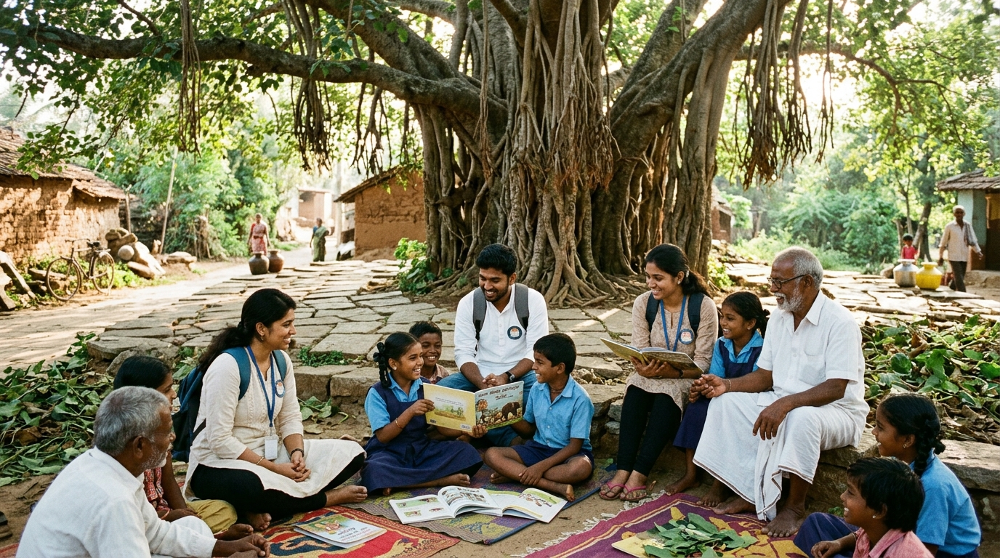
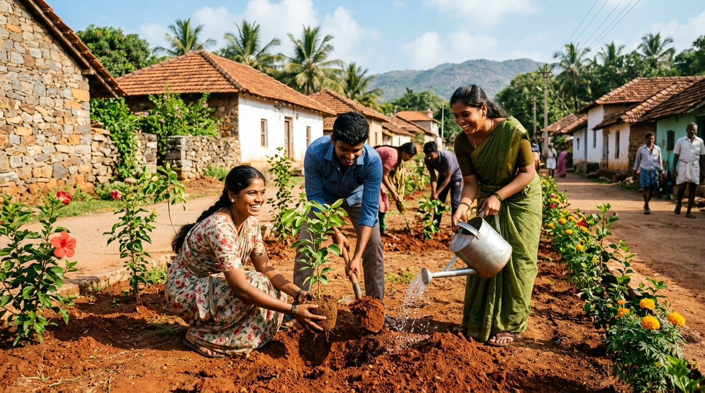

Inclusive Education for All
A Ballari where no child's dreams are curtailed by financial difficulty. Providing notebooks, exam motivation, competitive guidance, and value-based learning to rural high-school students.
Our Long-Term Horizon
We envision a society where every person has the opportunity to learn, stay healthy, and live with dignity in a clean and safe environment. Built on equality, dignity, and compassion, this is a Ballari where communities grow together and no one is left behind.
Founded in 2015 by like-minded citizens of Ballari, Sanmarga Geleyara Balaga believes that real development is measured not merely by infrastructure, but by the dignity, health, and knowledge accessible to the most vulnerable families.
Our vision connects everyday grassroots assistance with systemic community growth. Whether guiding an SSLC student to conquer exam fear or providing free eyesight checks to rural elders, every action moves Ballari forward.

Foundational Pillars
A Ballari where no child's dreams are curtailed by financial difficulty. Providing notebooks, exam motivation, competitive guidance, and value-based learning to rural high-school students.
A healthy community where preventative care, free eye-screenings, spectacles distribution, and medical consultations reach the doorsteps of underserved villages.
Combating heat and climate challenges through massive native tree planting, roadside sapling nurturing, and widespread public water conservation drives.
Inspiring youths and professionals to recognize their duty towards society, turning bystanders into active volunteers and community problem-solvers.
Our Everyday Purpose & Duty

We uplift society through meaningful work in education, health, and the environment. We support children and youth through quality education and skill development, promote community well-being through health awareness and care, and protect nature through tree plantation, cleanliness, and water conservation drives.
At Sanmarga Geleyara Balaga, mission is not a static paper statement—it is our weekend sweat, our volunteer presence in government school classrooms, our doctors examining rural seniors, and saplings planted with our own hands.
Working hand-in-hand with local communities, transport workers, police authorities, and educational officers, we bridge critical gaps with 100% voluntary transparency.
Our Action Areas
Conducting annual SSLC exam fear-reduction seminars, motivational coaching, memory techniques, and free distribution of study notebooks to high school students in Sandur, Kudligi, and Ballari.
Organizing multi-diagnostic medical check-ups and specialized free eye-care camps. Over 4,860 free eye beneficiaries and 3,000+ general check-ups supported with spectacles and essential medicines.
Planting over 2,510 native trees, providing cool drinking water to thousands of summer commuters inside KSRTC buses, and hosting air pollution control awareness campaigns with authorities.
Be part of the change
Whether offering an hour of your time, volunteering for an upcoming camp, or contributing a sapling, your support matters.